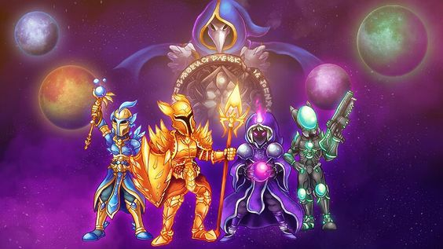
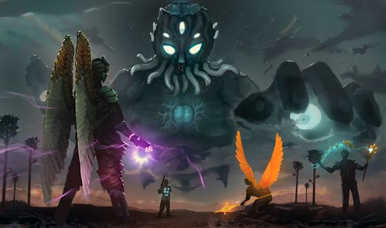
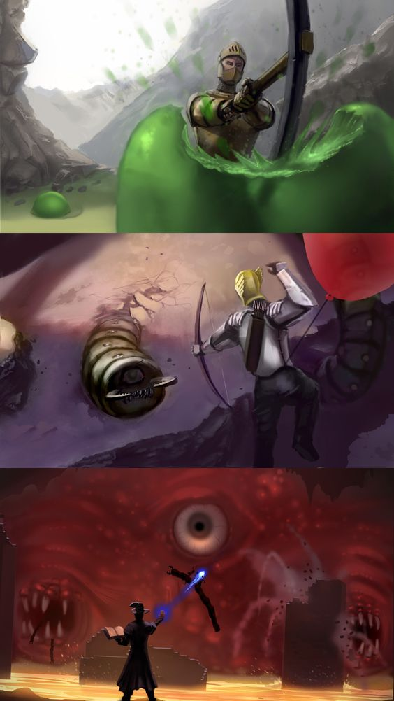

🔥 TERRARIA 🔥
Możesz wybrać ustawienie trybu postaci dla wersji Desktop version Desktop version, Console version Console version, Old-gen console version Old-gen console version, i Mobile version Mobile version. Jeżeli korzystasz z wersji na 3DS version version ta opcja będzie niedostępna, a wszystkie utworzone postacie będą na łatwym poziomie trudności. Uwaga: Podczas pierwszego doświadczenia z Terrarią zaleca się pozostawienie swojej postaci w trybie łatwym. Jest to najłatwiejszy tryb i sprawi, że nauka gry będzie przyjemniejsza. Poziom trudności postaci określa, co stanie się, gdy postać umrze - nie wpływa to na żadne inne aspekty rozgrywki, w tym na stopień trudności przeciwników. Tryb Łatwy (lub Tryb Klasyczny od wersji Desktop version Desktop version i Mobile version Mobile version) jest to najłatwiejszy poziom trudności (oraz jedyny poziom do wyboru dla Old-gen console version Old-gen console i 3DS version). Jest to również domyślny tryb podczas tworzenia postaci. Kiedy postać gracza umrze, straci jedynie połowę (lub 3/4, lub wszystkie) aktualnie posiadanych monet na ziemię. Ekwipunek postaci pozostaje nienaruszona, a wszystkie monety będzie można odzyskać z miejsca, w którym zostały utracone podczas śmierci. W przypadku kiedy tryb świata jest ustawiony na poziomie Ekspert lub Mistrz przeciwnicy mogą czasami zebrać upuszczone przez postać monety, chodząc lub przelatując przez nie. Zabicie tych przeciwników spowoduje upuszczenie wcześniej podniesionych przez nich monet i pozwoli na ich odzyskanie. Tryb Średni jest drugim trybem jaki można wybrać podczas tworzenia postaci. Kiedy postać umrze, wszystkie przedmioty, monety oraz amunicja zostaną utracone. Podobnie jak w przypadku monet, upuszczone przedmioty można odzyskać z miejsca, w którym zostały upuszczone. Czasami jednak przedmioty upuszczone w ten sposób mogą zostać trwale zniszczone, szczególnie jeśli wpadną do lawy. Ten tryb przypomina w działaniu mechanikę z gry Minecraft, jednak ryzyko wpadnięcia przedmiotów do lawy jest znacznie mniejsze w porównaniu do tej gry: Przedmioty z rangą unikatowości powyżej niebieskiej rzadkości nie spłoną w lawie, co chroni większość sprzętu poza najpospolitszymi na późniejszych etapach gry. Monety, bloki konstrukcyjne, przedmioty wyglądu i wyposażenie niskiego poziomu nadal mogą zostać utracone. Jednak upuszczone przedmioty (niezależnie od rzadkości) mogą być nadal niszczone przez eksplozje lub mogą zniknąć, jeśli limit upuszczonych przedmiotów przepełni się. (W grze może istnieć jednocześnie maksymalnie 400 luźnych przedmiotów lub stosów przedmiotów, jeśli pojawi się więcej, najstarsze przedmioty lub stosy znikną.) Tryb Hardcore jest najtrudniejszym trybem jaki można wybrać przy tworzeniu postaci - w tym trybie mamy tylko jedno życie, jeśli postać gracza umrze zostaje trwale usunięta. Wszystkie przedmioty zostają upuszczone w chwili śmierci, a postać zamienia się w ducha, i jeżeli wyjdziemy ze świata zostanie ona usunięta. W trybie wieloosobowym istnieje szansa, że inni gracze zdołają odzyskać utracone przez gracza przedmioty, lecz w trybie jednoosobowym przepadają na zawsze. Wszystkie przedmioty, które zostały zdeponowane w przenośnym schowku zostają trwale usunięte nawet jeżeli gracz grał w trybie dla wielu graczy. Tryb ten nie jest zalecany, w tym poradniku. (Uwaga: Tryb "Hardcore" nie jest tym samym co tryb "Hardmode", gdyż ten drugi związany jest ze światem a nie postacią.
 Terraria jest to platformowa gra przygodowa, z otwartym światem 2D, stworzona przez studio Re-Logic. Po raz pierwszy została wydana na komputery z systemem Microsoft Windows dnia 16 Maja 2011r., lecz obecnie jest dostępna dla wielu różnych systemów operacyjnych. W grze sterujemy własnoręcznie stworzoną postacią, w wygenerowanym przez nas świecie. W grze można wybrać rozgrywkę dla jednego gracza jak również rozpocząć przygodę w trybie wieloosobowym. Domyślnym językiem w grze jest Angielski, można go jednak zmienić na Niemiecki, Włoski, Francuski, Hiszpański, Rosyjski, Chiński uproszczony, Brazylijski portugalski oraz Polski. Rozgrywka ma kilka podobieństw do dobrze znanej gry Minecraft i została częściowo nią zainspirowana. Istnieje jednak duża liczba różnic, na przykład ilość bossów i wydarzeń. Studio Re-Logic zapowiedzieło prace nad drugą częścią gry, Terraria 2 jako plany na przyszłość. Jednak potem plany te zmieniono i ostatecznie studio zaczeło prace nad zupełnie nową odsłoną gry Terraria: Otherworld, która miała być połączeniem znanej Terrarii z elementami fabuły. Projekt ten został oficjalnie anulowany 12 Kwietnia 2018r. Terraria jest trzynastą najlepiej sprzedającą się grą wideo na świecie, z ponad 30 milionami sprzedanych egzemplarzy, w tym płatnymi pobraniami mobilnymi.

Nowa postać odradzająca się w lesie nowo utworzonego świata Terrarii. Gdy po raz pierwszy wejdziesz do swojego nowego świata twoja postać odrodzi się (zostanie umieszczona w grze) na środku mapy, co daje w rezultacie połowę świata do eksploracji z lewej strony, a połowę z prawej. Ta lokalizacja jest znana jako Punkt odrodzenia (lub po prostu często nazywany jako "Spawn"), a postać będzie za każdym razem odradzała się w tym miejscu gdy umrze, wejdzie do gry lub przeniesie się pzostanie przeteleportowana em|Mikstura powrotu|mikstury powrotu}}, Magiczne lusterkomagicznego lusterka lub Telefon komórkowytelefonu komórkowego. Zazwyczaj punkt odradzania się jest umieszczany zawsze w leśnym biomie, ale może się również zdarzyć sytuacja w której gracz odrodzi się na biomie zimowym, oraz bardzo rzadko w biomie żDżungla|dżungli]]. Żyły rudy zazwyczaj zostają wygenerowane blisko powierzchni, więc jest to łatwy sposób na wydobycie kilku bryłek bez konieczności zagłębiania się w niebezpieczne podziemia. Zaleca się również, aby pamiętać, gdzie jest to miejsce, ponieważ zbudowanie domu przy punkcie odradzania może być bardzo wygodniejsze, i powinno wystarczyć do czasu aż uzbierasz dość surowców do utworzenia łóżka.
UWAGA!!! Wszelakie informacje zawarte na tej stronie zostały zaczerpnięte z Teraria Wiki